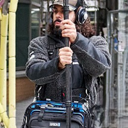

LOUKAS PANAGIOTIDIS
Feature films · TV series · Documentaries · Commercials · Podcasts. Boom in hand, timecode locked, always rolling.
psst — he follows your cursor
01 About
Sound Mixer & PSC Sound Recordist with credits across feature films, TV series, documentaries and commercials — from Emmerdale (ITV) to Amazon's Million Dollar Listing UAE and a short that went to Cannes.
Loukas records dialogue you don't have to fix in post: multi-track 32-bit float, clean booms, tidy lavs, rock-solid timecode. Professional and calm on strict schedules and fast-paced sets, with a van-load of kit and a clean driving licence (12 years) to get it there.
Beyond set, he's a full audio department in one person: post-production editing and restoration (iZotope RX), sound design with Foley and ADR, Dolby Atmos mixing, game audio in FMOD/Wwise/Unity, and composition — classically trained, First-Class Honours.

02 Selected Work
03 Full Credits
04 Services
Location Sound
Multi-track recording on Sound Devices 633 (32-bit float), boom operation, lav micing, audio monitoring distribution for the whole set.
Timecode & Sync
Frame-accurate timecode across cameras and sound with Deity TC-1 sync boxes. Post drops together like magic.
Post-Production
Dialogue editing and mixing, audio restoration, normalization and noise reduction in iZotope RX Advanced & Audition.
Sound Design · Foley · ADR
Advanced sound design for media using Foley art and SFX. Full ADR services available.
Dolby Atmos & Music
Immersive Atmos mixing, plus composing, arranging and orchestrating for film — stereo and 5.1. Pro Tools certified (AVID).
Game Audio & Podcasts
Scoring and sound design in FMOD, Wwise and Unity. Multi-mic podcast capture with full redundancy.
05 The Kit Bag
Core owned kit — specialist extras can be sub-hired per job.
Recorder
- Sound Devices 633 multichannel recorder (32-bit float)
Wireless
- 2× Wisycom MCR42 dual receivers
- 4× Wisycom MTP40s transmitters (50mW)
Lavaliers
- 4× DPA 6060
- 4× Sanken COS-11D
Boom Mics
- 2× Sennheiser MKH50 super-cardioid
- 1× Sennheiser MKH416 shotgun
Timecode
- 3× Deity TC-1 sync generators
Comms / IFB
- 5× Sennheiser SK2000/EK2000 IEM interruptible foldback

On set — prepping lavs over the bag rig.
Education & Certs
LET'S ROLL
SOUND.
Available for features, TV, docs, commercials & podcasts — UK based, happy to travel.